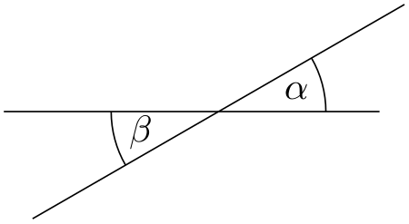
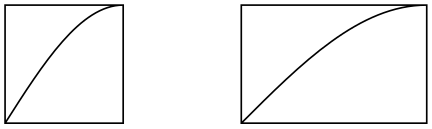

The TikZ and PGF Packages
Manual for version 3.1.10
TikZ
14 Syntax for Path Specifications¶
A path is a series of straight and curved line segments. It is specified following a \path command and the specification must follow a special syntax, which is described in the subsections of the present section.
-
\path⟨specification⟩; ¶
-
1. Some options take “immediate” effect and apply to all subsequent path operations on the path. For example, the rounded corners option will round all following corners, but not the corners “before” and if the sharp corners is given later on the path (in a new set of brackets), the rounding effect will end.

\tikz \draw (0,0) -- (1,1)
[rounded corners] -- (2,0) -- (3,1)
[sharp corners] -- (3,0) -- (2,1);
Another example are the transformation options, which also apply only to subsequent coordinates.
-
2. The options that have immediate effect can be “scoped” by putting part of a path in curly braces. For example, the above example could also be written as follows:
-
3. Some options only apply to the path as a whole. For example, the color= option for determining the color used for, say, drawing the path always applies to all parts of the path. If several different colors are given for different parts of the path, only the last one (on the outermost scope) “wins”:
Most options are of this type. In the above example, we would have had to “split up” the path into several \path commands:
This command is available only inside a {tikzpicture} environment.
The ⟨specification⟩ is a long stream of path operations. Most of these path operations tell TikZ how the path is built. For example, when you write --(0,0), you use a line-to operation and it means “continue the path from wherever you are to the origin”.
At any point where TikZ expects a path operation, you can also give some graphic options, which is a list of options in brackets, such as [rounded corners]. These options can have different effects:
By default, the \path command does “nothing” with the path, it just “throws it away”. Thus, if you write \path(0,0)--(1,1);, nothing is drawn in your picture. The only effect is that the area occupied by the picture is (possibly) enlarged so that the path fits inside the area. To actually “do” something with the path, an option like draw or fill must be given somewhere on the path. Commands like \draw do this implicitly.
Finally, it is also possible to give node specifications on a path. Such specifications can come at different locations, but they are always allowed when a normal path operation could follow. A node specification starts with node. Basically, the effect is to typeset the node’s text as normal TeX text and to place it at the “current location” on the path. The details are explained in Section 17.
Note, however, that the nodes are not part of the path in any way. Rather, after everything has been done with the path what is specified by the path options (like filling and drawing the path due to a fill and a draw option somewhere in the ⟨specification⟩), the nodes are added in a post-processing step.
Note: When scanning for path operations TikZ expands tokens looking for valid path operations. This however implies that these tokens has to be fully expandable up to the point where it results in a valid path operation.
-
/tikz/name=⟨path name⟩(no default)
Assigns a name to the path for reference (specifically, for reference in animations; for reference in intersections, use the name path command, which has a different purpose, see the intersections library for details). Since the name is a “high-level” name (drivers never know of it), you can use spaces, number, letters, or whatever you like when naming a path, but the name may not contain any punctuation like a dot, a comma, or a colon.
The following style influences scopes:
-
/tikz/every path(style, initially empty) ¶
This style is installed at the beginning of every path. This can be useful for (temporarily) adding, say, the draw option to everything in a scope.
\begin{tikzpicture}
[fill=yellow!80!black, % only sets the color
every path/.style={draw}] % all paths are drawn
\fill (0,0) rectangle
+(1,1);
\shade (2,0) rectangle
+(1,1);
\end{tikzpicture}
-
/tikz/insert path=⟨path⟩(no default) ¶
This key can be used inside an option to add something to the current path. This is mostly useful for defining styles that create graphic contents. This option should be used with care, for instance it should not be used as an argument of, say, a node. In the following example, we use a style to add little circles to a path.

The effect is the same as of (0,0) -- (1,1) circle[radius=2pt] -- (3,2) circle[radius=2pt].
The following options are for experts only:
-
/tikz/append after command=⟨path⟩(no default) ¶
Some of the path commands described in the following sections take optional arguments. For these commands, when you use this key inside these options, the ⟨path⟩ will be inserted after the path command is done. For instance, when you give this command in the option list of a node, the ⟨path⟩ will be added after the node. This is used by, for instance, the label option to allow you to specify a label in the option list of a node, but have this label cause a node to be added after another node.

If this key is called multiple times, the effects accumulate, that is, all of the paths are added in the order to keys were found.
-
/tikz/prefix after command=⟨path⟩(no default) ¶
Works like append after command, only the accumulation order is inverse: The ⟨path⟩ is added before any earlier paths added using either append after command or prefix after command.
14.1 The Move-To Operation¶
The perhaps simplest operation is the move-to operation, which is specified by just giving a coordinate where a path operation is expected.
-
\path … ⟨coordinate⟩ …;
The move-to operation normally starts a path at a certain point. This does not cause a line segment to be created, but it specifies the starting point of the next segment. If a path is already under construction, that is, if several segments have already been created, a move-to operation will start a new part of the path that is not connected to any of the previous segments.
\begin{tikzpicture}
\draw (0,0) --(2,0) (0,1) --(2,1);
\end{tikzpicture}
In the specification (0,0) --(2,0) (0,1) --(2,1) two move-to operations are specified: (0,0) and (0,1). The other two operations, namely --(2,0) and --(2,1) are line-to operations, described next.
There is special coordinate called current subpath start that is always at the position of the last move-to operation on the current path.
Note how in the above example the path is not closed (as --cycle would do). Rather, the line just starts and ends at the origin without being a closed path.
14.2 The Line-To Operation¶
14.2.1 Straight Lines¶
-
\path … --⟨coordinate or cycle⟩ …; ¶
The line-to operation extends the current path from the current point in a straight line to the given ⟨coordinate⟩ (the “or cycle” part is explained in a moment). The “current point” is the endpoint of the previous drawing operation or the point specified by a prior move-to operation.
When a line-to operation is used and some path segment has just been constructed, for example by another line-to operation, the two line segments become joined. This means that if they are drawn, the point where they meet is “joined” smoothly. To appreciate the difference, consider the following two examples: In the left example, the path consists of two path segments that are not joined, but they happen to share a point, while in the right example a smooth join is shown.
\begin{tikzpicture}[line width=10pt]
\draw (0,0) --(1,1) (1,1) --(2,0);
\draw (3,0) --
(4,1) --
(5,0);
\useasboundingbox (0,1.5); % make bounding box higher
\end{tikzpicture}
Instead of a coordinate following the two minus signs, you can also use the text cycle. This causes the straight line from the current point to go to the last point specified by a move-to operation. Note that this need not be the beginning of the path. Furthermore, a smooth join is created between the first segment created after the last move-to operation and the straight line appended by the cycle operation.
Consider the following example. In the left example, two triangles are created using three straight lines, but they are not joined at the ends. In the second example cycle operations are used.
\begin{tikzpicture}[line width=10pt]
\draw (0,0) --
(1,1) --
(1,0) --
(0,0) (2,0) --
(3,1) --
(3,0) --
(2,0);
\draw (5,0) --
(6,1) --
(6,0) --
cycle
(7,0) --
(8,1) --
(8,0) --
cycle;
\useasboundingbox (0,1.5); % make bounding box higher
\end{tikzpicture}
Writing cycle instead of a coordinate at the end of a path operation is possible with all path operations that end with a coordinate (such as -- or .. or sin or grid, but not graph or plot). In all cases, the effect is that the coordinate of the last moveto is used as the coordinate expected by the path operation and that a smooth join is added. (What actually happens that the text cycle used with any path operation other than -- gets replaced by (current subpath start)--cycle.)
14.2.2 Horizontal and Vertical Lines¶
Sometimes you want to connect two points via straight lines that are only horizontal and vertical. For this, you can use two path construction operations.
-
\path … -|⟨coordinate or cycle⟩ …;
This operation means “first horizontal, then vertical”.
\begin{tikzpicture}
\draw (0,0) node(a) [draw] {A} (1,1) node(b) [draw] {B};
\draw (a.north) |-
(b.west);
\draw[color=red] (a.east) -|
(2,1.5) -|
(b.north);
\end{tikzpicture}
Instead of a coordinate you can also write cycle to close the path:
\begin{tikzpicture}[ultra thick]
\draw (0,0) --
(1,1) -|
cycle;
\end{tikzpicture}
14.3 The Curve-To Operation¶
The curve-to operation allows you to extend a path using a Bézier curve.
-
\path … ..controls⟨c⟩and⟨d⟩..⟨y or cycle⟩ …; ¶
This operation extends the current path from the current point, let us call it \(x\), via a curve to a point \(y\) (if, instead of a coordinate you say cycle at the end, \(y\) will be the coordinate of the last move-to operation). The curve is a cubic Bézier curve. For such a curve, apart from \(y\), you also specify two control points \(c\) and \(d\). The idea is that the curve starts at \(x\), “heading” in the direction of \(c\). Mathematically spoken, the tangent of the curve at \(x\) goes through \(c\). Similarly, the curve ends at \(y\), “coming from” the other control point, \(d\). The larger the distance between \(x\) and \(c\) and between \(d\) and \(y\), the larger the curve will be.
If the “and⟨d⟩” part is not given, \(d\) is assumed to be equal to \(c\).
\begin{tikzpicture}
\draw[line width=10pt] (0,0) .. controls
(1,1) .. (4,0)
.. controls
(5,0) and
(5,1) .. (4,1);
\draw[color=gray] (0,0) --
(1,1) --
(4,0) --
(5,0) --
(5,1) --
(4,1);
\end{tikzpicture}
\begin{tikzpicture}
\draw[line width=10pt] (0,0) --
(2,0) .. controls
(1,1) .. cycle;
\end{tikzpicture}
As with the line-to operation, it makes a difference whether two curves are joined because they resulted from consecutive curve-to or line-to operations, or whether they just happen to have a common (end) point:
\begin{tikzpicture}[line width=10pt]
\draw (0,0) --
(1,1) (1,1) .. controls
(1,0) and
(2,0) .. (2,0);
\draw [yshift=-1.5cm]
(0,0) --
(1,1) .. controls
(1,0) and
(2,0) .. (2,0);
\end{tikzpicture}
14.4 The Rectangle Operation¶
A rectangle can obviously be created using four straight lines and a cycle operation. However, since rectangles are needed so often, a special syntax is available for them.
-
\path … rectangle⟨corner or cycle⟩ …; ¶
When this operation is used, one corner will be the current point, another corner is given by ⟨corner⟩, which becomes the new current point.
\begin{tikzpicture}
\draw (0,0) rectangle
(1,1);
\draw (.5,1) rectangle
(2,0.5) (3,0) rectangle
(3.5,1.5) --
(2,0);
\end{tikzpicture}
Just for consistency, you can also use cycle instead of a coordinate, but it is a bit unclear what use this might have.
14.5 Rounding Corners¶
All of the path construction operations mentioned up to now are influenced by the following option:
-
/tikz/rounded corners=⟨inset⟩ (default 4pt) ¶
When this option is in force, all corners (places where a line is continued either via line-to or a curve-to operation) are replaced by little arcs so that the corner becomes smooth.
The ⟨inset⟩ describes how big the corner is. Note that the ⟨inset⟩ is not scaled along if you use a scaling option like scale=2.
\begin{tikzpicture}
\draw[color=gray,very thin] (10pt,15pt) circle[radius=10pt];
\draw[rounded corners=10pt] (0,0) --
(0pt,25pt) --
(40pt,25pt);
\end{tikzpicture}
You can switch the rounded corners on and off “in the middle of path” and different corners in the same path can have different corner radii:
\begin{tikzpicture}
\draw (0,0) [rounded corners=10pt] --
(1,1) --
(2,1)
[sharp corners] --
(2,0)
[rounded corners=5pt] --
cycle;
\end{tikzpicture}
Here is a rectangle with rounded corners:
\tikz \draw[rounded corners=1ex] (0,0) rectangle
(20pt,2ex);
You should be aware, that there are several pitfalls when using this option. First, the rounded corner will only be an arc (part of a circle) if the angle is \(90^\circ \). In other cases, the rounded corner will still be round, but “not as nice”.
Second, if there are very short line segments in a path, the “rounding” may cause inadvertent effects. In such case it may be necessary to temporarily switch off the rounding using sharp corners.
-
/tikz/sharp corners(no value) ¶
This options switches off any rounding on subsequent corners of the path.
14.6 The Circle and Ellipse Operations¶
Circles and ellipses are common path elements for which there is a special path operation.
-
\path … circle[⟨options⟩] …; ¶
-
/tikz/x radius=⟨value⟩(no default) ¶
-
/tikz/y radius=⟨value⟩(no default) ¶
-
/tikz/radius=⟨value⟩(no default) ¶
-
/tikz/at=⟨coordinate⟩(no default) ¶
-
/tikz/every circle(style, no value) ¶
This command adds a circle to the current path where the center of the circle is the current point by default, but you can use the at option to change this. The new current point of the path will be (typically just remain) the center of the circle.
The radius of the circle is specified using the following options:
Sets the horizontal radius of the circle (which, when this value is different from the vertical radius, is actually an ellipse). The ⟨value⟩ may either be a dimension or a dimensionless number. In the latter case, the number is interpreted in the \(xy\)-coordinate system (if the \(x\)-unit is set to, say, 2cm, then x radius=3 will have the same effect as x radius=6cm).
Works like the x radius.
Sets the x radius and y radius simultaneously.
If this option is explicitly set inside the ⟨options⟩ (or indirectly via the every circle style), the ⟨coordinate⟩ is used as the center of the circle instead of the current point. Setting at to some value in an enclosing scope has no effect.
The ⟨options⟩ may also contain additional options like, say, a rotate or scale, that will only have an effect on the circle.
\begin{tikzpicture}
\draw (1,0) circle
[radius=1.5];
\fill (1,0) circle
[x radius=1cm, y radius=5mm, rotate=30];
\end{tikzpicture}
It is possible to set the radius also in some enclosing scope, in this case the options can be left out (but see the note below on what may follow):
\begin{tikzpicture}[radius=2pt]
\draw (0,0) circle
--
(1,1) circle
--
++(0,1) circle;
\end{tikzpicture}
The following style is used with every circle:
You can use this key to set up, say, a default radius for every circle. The key will also be used with the ellipse operation.
In case you feel that the names radius and x radius are too long for your taste, you can easily created shorter aliases:
You can then say circle [r=1cm] or circle [rx=1,ry=1.5]. The reason TikZ uses the longer names by default is that it encourages people to write more readable code.
Note: There also exists an older syntax for circles, where the radius of the circle is given in parentheses right after the circle command as in circle (1pt). Although this syntax is a bit more succinct, it is harder to understand for readers of the code and the use of parentheses for something other than a coordinate is ill-chosen.
TikZ will use the following rule to determine whether the old or the normal syntax is used: If circle is directly followed by something that (expands to) an opening parenthesis, then the old syntax is used and inside these following parentheses there must be a single number or dimension representing a radius. In all other cases the new syntax is used.
-
\path … ellipse[⟨options⟩] …; ¶
This command has exactly the same effect as circle. The older syntax for this command is ellipse (⟨x radius⟩ and ⟨y radius⟩). As for the circle command, this syntax is not as good as the standard syntax.
\begin{tikzpicture}
\draw [help lines] (0,0) grid
(3,2);
\draw (1,1) ellipse
[x radius=1cm,y radius=.5cm];
\end{tikzpicture}
14.7 The Arc Operation¶
The arc operation allows you to add an arc to the current path.
-
\path … arc[⟨options⟩] …; ¶
-
/tikz/start angle=⟨degrees⟩(no default) ¶
-
/tikz/end angle=⟨degrees⟩(no default) ¶
-
/tikz/delta angle=⟨degrees⟩(no default) ¶
The arc operation adds a part of an ellipse to the current path. The radii of the ellipse are given by the values of x radius and y radius, which should be set in the ⟨options⟩. The arc will start at the current point and will end at the end of the arc. The arc will start and end at angles computed from the three keys start angle, end angle, and delta angle. Normally, the first two keys specify the start and end angle. However, in case one of them is empty, it is computed from the other key plus or minus the delta angle. In detail, if end angle is empty, it is set to the start angle plus the delta angle. If the start angle is missing, it is set to the end angle minus the delta angle. If all three keys are set, the delta angle is ignored.
Sets the start angle.
Sets the end angle.
Sets the delta angle.
\begin{tikzpicture}[radius=1cm]
\draw (0,0) arc[start angle=180, end angle=90]
--
(2,.5) arc[start angle=90, delta angle=-90];
\draw (4,0) --
+(30:1cm)
arc
[start angle=30, delta angle=30] --
cycle;
\draw (8,0) arc
[start angle=0, end angle=270,
x radius=1cm, y radius=5mm] --
cycle;
\end{tikzpicture}

\begin{tikzpicture}[radius=1cm,delta angle=30]
\draw (-1,0) --
+(3.5,0);
\draw (1,0) ++(210:2cm) --
+(30:4cm);
\draw (1,0) +(0:1cm) arc
[start angle=0];
\draw (1,0) +(180:1cm) arc
[start angle=180];
\path (1,0) ++(15:.75cm) node{$\alpha$};
\path (1,0) ++(15:-.75cm) node{$\beta$};
\end{tikzpicture}
There also exists a shorter syntax for the arc operation, namely arc begin directly followed by (⟨start angle⟩:⟨end angle⟩:⟨radius⟩). However, this syntax is harder to read, so the normal syntax should be preferred in general.
14.8 The Grid Operation¶
You can add a grid to the current path using the grid path operation.
-
\path … grid[⟨options⟩]⟨corner or cycle⟩ …; ¶
-
/tikz/step=⟨number or dimension or coordinate⟩ (no default, initially 1cm) ¶
-
/tikz/xstep=⟨dimension or number⟩ (no default, initially 1cm) ¶
-
/tikz/ystep=⟨dimension or number⟩ (no default, initially 1cm) ¶
-
/tikz/help lines(style, initially line width=0.2pt,gray) ¶
This operations adds a grid filling a rectangle whose two corners are given by ⟨corner⟩ and by the previous coordinate. (Instead of a coordinate you can also say cycle to use the position of the last move-to as the corner coordinate, but it not very natural to do so.) Thus, the typical way in which a grid is drawn is \draw (1,1) grid (3,3);, which yields a grid filling the rectangle whose corners are at \((1,1)\) and \((3,3)\). All coordinate transformations apply to the grid.
The ⟨options⟩, which are local to the grid operation, can be used to influence the appearance of the grid. The stepping of the grid is governed by the following options:
Sets the stepping in both the \(x\) and \(y\)-direction. If a dimension is provided, this is used directly. If a number is provided, this number is interpreted in the \(xy\)-coordinate system. For example, if you provide the number 2, then the \(x\)-step is twice the \(x\)-vector and the \(y\)-step is twice the \(y\)-vector set by the x= and y= options. Finally, if you provide a coordinate, then the \(x\)-part of this coordinate will be used as the \(x\)-step and the \(y\)-part will be used as the \(y\)-coordinate.

\begin{tikzpicture}[x=.5cm]
\draw[thick] (0,0) grid
[step=1] (3,2);
\draw[red] (0,0) grid
[step=.75cm] (3,2);
\end{tikzpicture}
\begin{tikzpicture}
\draw (0,0) circle
[radius=1];
\draw[blue] (0,0) grid
[step=(45:1)] (3,2);
\end{tikzpicture}
A complication arises when the \(x\)- and/or \(y\)-vector do not point along the axes. Because of this, the actual rule for computing the \(x\)-step and the \(y\)-step is the following: As the \(x\)- and \(y\)-steps we use the \(x\)- and \(y\)-components or the following two vectors: The first vector is either \((\meta {x-grid-step-number},0)\) or \((\meta {x-grid-step-dimension},0\mathrm {pt})\), the second vector is \((0,\meta {y-grid-step-number})\) or \((0\mathrm {pt},\meta {y-grid-step-dimension})\).
If the \(x\)-step or \(y\)-step is \(0\) or negative the corresponding lines are not drawn.
Sets the stepping in the \(x\)-direction.
\begin{tikzpicture}
\draw (0,0) grid
[xstep=.5,ystep=.75] (3,2);
\draw[ultra thick] (0,0) grid
[ystep=0] (3,2);
\end{tikzpicture}
Sets the stepping in the \(y\)-direction.
It is important to note that the grid is always “phased” such that it contains the point \((0,0)\) if that point happens to be inside the rectangle. Thus, the grid does not always have an intersection at the corner points; this occurs only if the corner points are multiples of the stepping. Note that due to rounding errors, the “last” lines of a grid may be omitted. In this case, you have to add an epsilon to the corner points.
The following style is useful for drawing grids:
This style makes lines “subdued” by using thin gray lines for them. However, this style is not installed automatically and you have to say for example:
\tikz \draw[help lines] (0,0) grid
(3,3);
14.9 The Parabola Operation¶
The parabola path operation continues the current path with a parabola. A parabola is a (shifted and scaled) curve defined by the equation \(f(x) = x^2\) and looks like this: .
-
\path … parabola[⟨options⟩]bend⟨bend coordinate⟩⟨coordinate or cycle⟩ …; ¶
-
/tikz/bend=⟨coordinate⟩(no default) ¶
-
/tikz/bend pos=⟨fraction⟩(no default) ¶
-
/tikz/parabola height=⟨dimension⟩(no default) ¶
-
/tikz/bend at start(style, no value) ¶
-
/tikz/bend at end(style, no value) ¶
This operation adds a parabola through the current point and the given ⟨coordinate⟩ or, if cycle is used instead of coordinate at the end, the ⟨coordinate⟩ is set to the position of the last move-to and the path gets closed after the parabola. If the bend is given, it specifies where the bend should go; the ⟨options⟩ can also be used to specify where the bend is. By default, the bend is at the old current point.
\begin{tikzpicture}
\draw (0,0) rectangle
(1,1.5)
(0,0) parabola
(1,1.5);
\draw[xshift=1.5cm] (0,0) rectangle
(1,1.5)
(0,0) parabola[bend at end] (1,1.5);
\draw[xshift=3cm] (0,0) rectangle
(1,1.5)
(0,0) parabola
bend
(.75,1.75) (1,1.5);
\draw[yshift=-2cm] (1,1.5) --
(0,0) parabola
cycle;
\end{tikzpicture}
The following options influence parabolas:
Has the same effect as saying bend⟨coordinate⟩ outside the ⟨options⟩. The option specifies that the bend of the parabola should be at the given ⟨coordinate⟩. You have to take care yourself that the bend position is a “valid” position; which means that if there is no parabola of the form \(f(x) = a x^2 + b x + c\) that goes through the old current point, the given bend, and the new current point, the result will not be a parabola.
There is one special property of the ⟨coordinate⟩: When a relative coordinate is given like +(0,0), the position relative to this coordinate is “flexible”. More precisely, this position lies somewhere on a line from the old current point to the new current point. The exact position depends on the next option.
Specifies where the “previous” point is relative to which the bend is calculated. The previous point will be at the ⟨fraction⟩th part of the line from the old current point to the new current point.
The idea is the following: If you say bend pos=0 and bend +(0,0), the bend will be at the old current point. If you say bend pos=1 and bend +(0,0), the bend will be at the new current point. If you say bend pos=0.5 and bend +(0,2cm) the bend will be 2cm above the middle of the line between the start and end point. This is most useful in situations such as the following:
\begin{tikzpicture}
\draw[help lines] (0,0) grid
(3,2);
\draw (-1,0) parabola[bend pos=0.5] bend
+(0,2) +(3,0);
\end{tikzpicture}
In the above example, the bend +(0,2) essentially means “a parabola that is 2cm high” and +(3,0) means “and 3cm wide”. Since this situation arises often, there is a special shortcut option:
This option has the same effect as [bend pos=0.5,bend={+(0pt,⟨dimension⟩)}].

\begin{tikzpicture}
\draw[help lines] (0,0) grid
(3,2);
\draw (-1,0) parabola[parabola height=2cm] +(3,0);
\end{tikzpicture}
The following styles are useful shortcuts:
This places the bend at the start of a parabola. It is a shortcut for the following options: bend pos=0,bend={+(0,0)}.
This places the bend at the end of a parabola.
14.10 The Sine and Cosine Operation¶
The sin and cos operations are similar to the parabola operation. They, too, can be used to draw (parts of) a sine or cosine curve.
-
\path … sin⟨coordinate or cycle⟩ …; ¶
The effect of sin is to draw a scaled and shifted version of a sine curve in the interval \([0,\pi /2]\). The scaling and shifting is done in such a way that the start of the sine curve in the interval is at the old current point and that the end of the curve in the interval is at ⟨coordinate⟩. Here is an example that should clarify this:

-
\path … cos⟨coordinate or cycle⟩ …; ¶
This operation works similarly, only a cosine in the interval \([0,\pi /2]\) is drawn. By correctly alternating sin and cos operations, you can create a complete sine or cosine curve:
Note that there is no way to (conveniently) draw an interval on a sine or cosine curve whose end points are not multiples of \(\pi /2\).
14.11 The SVG Operation¶
The svg operation can be used to extend the current path by a path given in the svg path data syntax. This syntax is described in detail in Section 8.3 of the svg 1.1 specification, please consult this specification for details.
-
\path … svg[⟨options⟩]{⟨path data⟩} …; ¶
{kind=link}
This operation adds the path specified in the ⟨path data⟩ in svg 1.1 path data syntax to the current path. Unlike the svg-specification, it is permissible that the path data does not start with a move-to command (m or M), in which case the last point of the current path is used as start point. The optional ⟨options⟩ apply locally to this path operation, typically you will use them to set up, say, some transformations.
\usetikzlibrary {svg.path}
\begin{tikzpicture}
\filldraw [fill=red!20] (0,1) svg[scale=2] {h
10
v
10
h
-10}
node
[above left] {upper
left} --
cycle;
\draw svg
{M
0
0
L
20
20
h
10
a
10
10
0
0
0
-20
0};
\end{tikzpicture}
{kind=link}
An svg coordinate like 10 20 is always interpreted as (10pt,20pt), so the basic unit is always points (pt). The \(xy\)-coordinate system is not used. However, you can use scaling to (locally) change the basic unit. For instance, svg[scale=1cm] (yes, this works, although some rather evil magic is involved) will cause 1cm to be the basic unit.
Instead of curly braces, you can also use quotation marks to indicate the start and end of the svg path.
Warning: The arc operations (a and A) are numerically instable. This means that they will be quite imprecise, except when the angle is a multiple of \(90^\circ \) (as is, fortunately, most often the case).
14.12 The Plot Operation¶
The plot operation can be used to append a line or curve to the path that goes through a large number of coordinates. These coordinates are either given in a simple list of coordinates, read from some file, or they are computed on the fly.
Since the syntax and the behavior of this command are a bit complex, they are described in the separated Section 22.
14.13 The To Path Operation¶
The to operation is used to add a user-defined path from the previous coordinate to the following coordinate. When you write (a) to (b), a straight line is added from a to b, exactly as if you had written (a) -- (b). However, if you write (a) to [out=135,in=45] (b) a curve is added to the path, which leaves at an angle of 135\(^\circ \) at a and arrives at an angle of 45\(^\circ \) at b. This is because the options in and out trigger a special path to be used instead of the straight line.
-
\path … to[⟨options⟩] ⟨nodes⟩ ⟨coordinate or cycle⟩ …; ¶
-
/tikz/edge node=⟨node specification⟩(no default) ¶
-
/tikz/edge label'=⟨text⟩(no default) ¶
-
/tikz/every to(style, initially empty) ¶
-
/tikz/to path=⟨path⟩(no default) ¶
-
• \tikztostart will expand to the from-coordinate (without the parentheses).
-
• \tikztonodes will expand to the nodes between the to operation and the coordinate. Furthermore, these nodes will have the pos option set implicitly.
-
/tikz/execute at begin to=⟨code⟩(no default) ¶
-
/tikz/execute at end to=⟨code⟩(no default) ¶
-
/tikz/every to(style, initially empty)
This path operation inserts the path currently set via the to path option at the current position. The ⟨options⟩ can be used to modify (perhaps implicitly) the to path and to set up how the path will be rendered.
Before the to path is inserted, a number of macros are set up that can “help” the to path. These are \tikztostart, \tikztotarget, and \tikztonodes; they are explained in the following.
Start and Target Coordinates. The to operation is always followed by a ⟨coordinate⟩, called the target coordinate, or the text cycle, in which case the last move-to is used as a coordinate and the path gets closed. The macro \tikztotarget is set to this coordinate (without its parentheses). There is also a start coordinate, which is the coordinate preceding the to operation. This coordinate can be accessed via the macro \tikztostart. In the following example, for the first to, the macro \tikztostart is 0pt,0pt and the \tikztotarget is 0,2. For the second to, the macro \tikztostart is 10pt,10pt and \tikztotarget is a. For the third, they are set to a and current subpath start.
Nodes on to–paths. It is possible to add nodes to the paths constructed by a to operation. To do so, you specify the nodes between the to keyword and the coordinate (if there are options to the to operation, these come first). The effect of (a) to node {x} (b) (typically) is the same as if you had written (a) -- node {x} (b), namely that the node is placed on the to. This can be used to add labels to tos:

Instead of writing the node between the to keyword and the target coordinate, you may also use the following keys to create such nodes:
This key can be used inside the ⟨options⟩ of a to path command. It will add the ⟨node specification⟩ to the list of nodes to be placed on the connecting line, just as if you had written the ⟨node specification⟩ directly after the to keyword:
This key is mostly useful to create labels automatically using other keys.
A shorthand for edge node={node[auto,swap]{⟨text⟩}}.
\tikz \draw (0,0) to
[edge label=x, edge label'=y] (3,2);
When the quotes library is loaded, additional ways of specifying nodes on to–paths become available, see Section 17.12.2.
Styles for to-paths. In addition to the ⟨options⟩ given after the to operation, the following style is also set at the beginning of the to path:
This style is installed at the beginning of every to.
Note that, as explained below, every to path is implicitly surrounded by curly braces. This means that options like draw given in an every to do not actually influence the path. You can fix this by using the append after command option:
Options. The ⟨options⟩ given with the to allow you to influence the appearance of the to path. Mostly, these options are used to change the to path. This can be used to change the path from a straight line to, say, a curve.
The path used is set using the following option:
Whenever a to operation is used, the ⟨path⟩ is inserted. More precisely, the following path is added:
{[every to,⟨options⟩] ⟨path⟩ }
The ⟨options⟩ are the options given to the to operation, the ⟨path⟩ is the path set by this option to path.
Inside the ⟨path⟩, different macros are used to reference the from- and to-coordinates. In detail, these are:
Let us have a look at a simple example. The standard straight line for a to is achieved by the following ⟨path⟩:
-- (\tikztotarget) \tikztonodes
Indeed, this is the default setting for the path. When we write (a) to (b), the ⟨path⟩ will expand to (a) -- (b), when we write
(a) to[red] node {x} (b)
the ⟨path⟩ will expand to
(a) -- (b) node[red] {x}
It is not possible to specify the path
-- \tikztonodes (\tikztotarget)
since TikZ does not allow one to have a macro after -- that expands to a node.
Now let us have a look at how we can modify the ⟨path⟩ sensibly. The simplest way is to use a curve.
Here is another example:
\tikzset{
my loop/.style={to path={
.. controls
+(80:1) and +(100:1) .. (\tikztotarget) \tikztonodes}},
my state/.style={circle,draw}}
\begin{tikzpicture}[shorten >=2pt]
\node [my state] (a) at
(210:1) {$q_a$};
\node [my state] (b) at
(330:1) {$q_b$};
\draw[->] (a) to
node[below] {1} (b)
to
[my loop] node[above right] {0} (b);
\end{tikzpicture}
The ⟨code⟩ is executed prior to the to. This can be used to draw one or more additional paths or to do additional computations.
Works like the previous option, only this code is executed after the to path has been added.
This style is installed at the beginning of every to.
There are a number of predefined to paths, see Section 74 for a reference.
14.14 The Foreach Operation¶
-
\path … foreach⟨variables⟩[⟨options⟩] in ⟨list⟩ {⟨path commands⟩} …; ¶
The foreach operation can be used to repeatedly insert the ⟨path commands⟩ into the current path. Naturally, the ⟨path commands⟩ should internally reference some of the ⟨variables⟩ so that you do not insert exactly the same path repeatedly, but rather variations. For historical reasons, you can also write \foreach instead of foreach.

See Section 88 for more details on the for-each-command.
14.15 The Let Operation¶
The let operation is the first of a number of path operations that do not actually extend that path, but have different, mostly local, effects. It requires the calc library, see Section 13.5.
-
\path … let⟨assignment⟩ ,⟨assignment⟩,⟨assignment⟩… in …; ¶
-
\n{⟨number register⟩} ¶
-
\p{⟨point register⟩} ¶
-
\x{⟨point register⟩} ¶
-
\y{⟨point register⟩} ¶
When this path operation is encountered, the ⟨assignment⟩s are evaluated, one by one. This will store coordinate and number in special registers (which are local to TikZ, they have nothing to do with TeX registers). Subsequently, one can access the contents of these registers using the macros \p, \x, \y, and \n.
The first kind of permissible ⟨assignment⟩s have the following form:
\n⟨number register⟩={⟨formula⟩}
When an assignment has this form, the ⟨formula⟩ is evaluated using the \pgfmathparse operation. The result is stored in the ⟨number register⟩. If the ⟨formula⟩ involves a dimension anywhere (as in 2*3cm/2), then the ⟨number register⟩ stores the resulting dimension with a trailing pt. A ⟨number register⟩ can be named arbitrarily and is a normal TeX parameter to the \n macro. Possible names are {left corner}, but also just a single digit like 5.
Let us call the path that follows a let operation its body. Inside the body, the \n macro can be used to access the register.
When this macro is used on the left-hand side of an =-sign in a let operation, it has no effect and is just there for readability. When the macro is used on the right-hand side of an =-sign or in the body of the let operation, then it expands to the value stored in the ⟨number register⟩. This will either be a dimensionless number like 2.0 or a dimension like 5.6pt.
For instance, if we say let \n1={1pt+2pt}, \n2={1+2} in ..., then inside the ... part the macro \n1 will expand to 3pt and \n2 expands to 3.
The second kind of ⟨assignments⟩ have the following form:
\p⟨point register⟩=⟨coordinate⟩
Point position registers store a single point, consisting of an \(x\)-part and a \(y\)-part measured in TeX points (pt). In particular, point registers do not store nodes or node names. Here is an example:
\usetikzlibrary {calc}
\begin{tikzpicture}
\draw [help lines] (0,0) grid
(3,2);
\draw let
\p{foo} =
(1,1), \p2
=
(2,0) in
(0,0) --
(\p2) --
(\p{foo});
\end{tikzpicture}
When this macro is used on the left-hand side of an =-sign in a let operation, it has no effect and is just there for readability. When the macro is used on the right-hand side of an =-sign or in the body of the let operation, then it expands to the \(x\)-part (measured in TeX points) of the coordinate stored in the ⟨register⟩, followed, by a comma, followed by the \(y\)-part.
For instance, if we say let \p1=(1pt,1pt+2pt) in ..., then inside the ... part the macro \p1 will expand to exactly the seven characters “1pt,3pt”. This means that you when you write (\p1), this expands to (1pt,3pt), which is presumably exactly what you intended.
This macro expands just to the \(x\)-part of the point register. If we say as above, as we did above, let \p1=(1pt,1pt+2pt) in ..., then inside the ... part the macro \x1 expands to 1pt.
Works like \x, only for the \(y\)-part.
Note that the above macros are available only inside a let operation.
Here is an example where let clauses are used to assemble a coordinate from the \(x\)-coordinate of a first point and the \(y\)-coordinate of a second point. Naturally, using the |- notation, this could be written much more compactly.
\usetikzlibrary {calc}
\begin{tikzpicture}
\draw [help lines] (0,0) grid
(3,2);
\draw (1,0) coordinate
(first point)
--
(3,2) coordinate
(second point);
\fill[red] let
\p1
=
(first point),
\p2
=
(second point) in
(\x1,\y2) circle
[radius=2pt];
\end{tikzpicture}
Note that the effect of a let operation is local to the body of the let operation. If you wish to access a computed coordinate outside the body, you must use a coordinate path operation:
\usetikzlibrary {calc}
\begin{tikzpicture}
\draw [help lines] (0,0) grid
(3,2);
\path % let's define some points:
let
\p1
=
(1,0),
\p2
=
(3,2),
\p{center} =
($ (\p1) !.5!
(\p2) $) % center
in
coordinate
(p1) at
(\p1)
coordinate
(p2) at
(\p2)
coordinate
(center) at
(\p{center});
\draw (p1) --
(p2);
\fill[red] (center) circle
[radius=2pt];
\end{tikzpicture}
For a more useful application of the let operation, let us draw a circle that touches a given line:
\usetikzlibrary {calc}
\begin{tikzpicture}
\draw [help lines] (0,0) grid
(3,3);
\coordinate (a) at
(rnd,rnd);
\coordinate (b) at
(3-rnd,3-rnd);
\draw (a) --
(b);
\node (c) at
(1,2) {x};
\draw let
\p1
=
($ (a)!(c)!(b) -
(c) $),
\n1
=
{veclen(\x1,\y1)}
in
circle
[at=(c), radius=\n1];
\end{tikzpicture}
14.16 The Scoping Operation¶
When TikZ encounters and opening or a closing brace ({ or }) at some point where a path operation should come, it will open or close a scope. All options that can be applied “locally” will be scoped inside the scope. For example, if you apply a transformation like [xshift=1cm] inside the scoped area, the shifting only applies to the scope. On the other hand, an option like color=red does not have any effect inside a scope since it can only be applied to the path as a whole.
Concerning the effect of scopes on relative coordinates, please see Section 13.4.3.
14.17 The Node and Edge Operations¶
The node operation adds a so-called node to a path. This operation is special in the following sense: It does not change the current path in any way. In other words, this operation is not really a path operation, but has an effect that is “external” to the path. The edge operation has similar effect in that it adds something after the main path has been drawn. However, it works like the to operation, that is, it adds a to path to the picture after the main path has been drawn.
Since these operations are quite complex, they are described in the separate Section 17.
14.18 The Graph Operation¶
The graph operation can be used to specify easily how a large number of nodes are connected. This operation is documented in a separate section, see Section 19.
14.19 The Pic Operation¶
The pic operation is used to insert a “short picture” (hence the “short” name) at the current position of the path. This operation is somewhat similar to the node operation and discussed in detail in Section 18.
14.20 The Attribute Animation Operation¶
14.21 The PGF-Extra Operation¶
In some cases you may need to “do some calculations or some other stuff” while a path is constructed. For this, you would like to suspend the construction of the path and suspend TikZ’s parsing of the path, you would then like to have some TeX code executed, and would then like to resume the parsing of the path. This effect can be achieved using the following path operation \pgfextra. Note that this operation should only be used by real experts and should only be used deep inside clever macros, not on normal paths.
-
\pgfextra{⟨code⟩} ¶
This command may only be used inside a TikZ path. There it is used like a normal path operation. The construction of the path is temporarily suspended and the ⟨code⟩ is executed. Then, the path construction is resumed.
\newdimen\mydim
\begin{tikzpicture}
\mydim=1cm
\draw (0pt,\mydim) \pgfextra{\mydim=2cm} --
(0pt,\mydim);
\end{tikzpicture}
-
\pgfextra⟨code⟩ \endpgfextra
This is an alternative syntax for the \pgfextra command. If the code following \pgfextra does not start with a brace, the ⟨code⟩ is executed until \endpgfextra is encountered. What actually happens is that when \pgfextra is not followed by a brace, this completely shuts down the TikZ parser and \endpgfextra is a normal macro that restarts the parser.

\newdimen\mydim
\begin{tikzpicture}
\mydim=1cm
\draw (0pt,\mydim)
\pgfextra \mydim=2cm
\endpgfextra --
(0pt,\mydim);
\end{tikzpicture}
14.22 Interacting with the Soft Path subsystem¶
During construction TikZ stores the path internally as a soft path. Sometimes it is desirable to save a path during the stage of construction, restore it elsewhere and continue using it. There are two keys to facilitate this operation, which are explained below. To learn more about the soft path subsystem, refer to section 121.
-
/tikz/save path=⟨macro⟩(no default) ¶
Save the current soft path into ⟨macro⟩.
-
/tikz/use path=⟨macro⟩(no default) ¶
Set the current path to the soft path stored in ⟨macro⟩.
\usetikzlibrary {intersections}
\begin{tikzpicture}
\path[save path=\pathA,name path=A] (0,1) to
[bend left] (1,0);
\path[save path=\pathB,name path=B]
(0,0) .. controls
(.33,.1) and
(.66,.9) .. (1,1);
\fill[name intersections={of=A and B}] (intersection-1) circle
(1pt);
\draw[blue][use path=\pathA];
\draw[red] [use path=\pathB];
\end{tikzpicture}